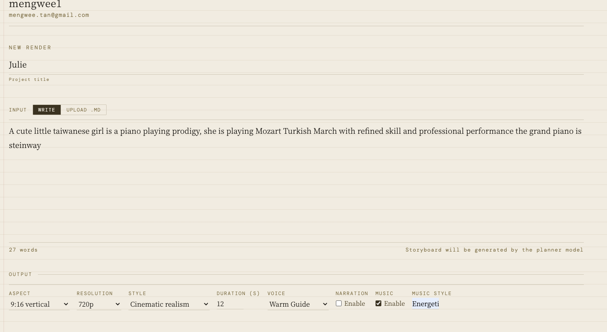
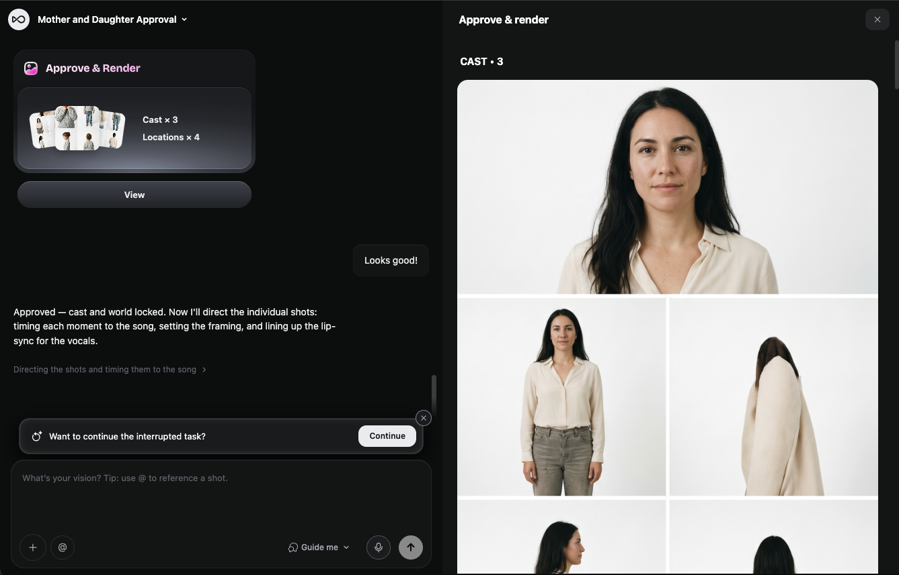

We tested the new background music feature end-to-end. Single prompt to video with music — it works. Here's what we found.
The test
We ran a series of prompts through linyan.io with the new background music integration. Here's one example prompt:
With the new feature, the output includes both the generated video AND synchronized background music that matches the mood and pacing of the clip.
The results
Watch on TikTok
What changed
The key addition is Suno integration for audio. We built a music planner that:
- Analyzes the prompt mood and pacing
- Generates music that matches the scene
- Synchronizes the audio with video length
Background music is now live. Single prompt to video with sound works end-to-end.

We fed the same single sentence to both platforms. One returned a finished video in seconds; the other stalled.

From the Stanford symposium: Why Sakana AI's lean approach may be the real disruptor in 2026's AI race.

One prompt, two engines, no retries. LTX-2.3 Pro rendered both characters. Our Seedance 2.0 pipeline never rendered the second one at all.

70+ clips, two non-human characters, a dying firelight scene. What held up, what didn't, and what we're fixing next.

A morning of mundane AI failures after rejecting dark AI spirituality. A true story from Yishun.

A fantasy drama, an OpenClaw pipeline, and 70+ AI-generated cinematic clips. Here's how it came together.